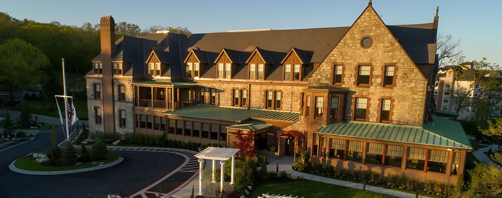
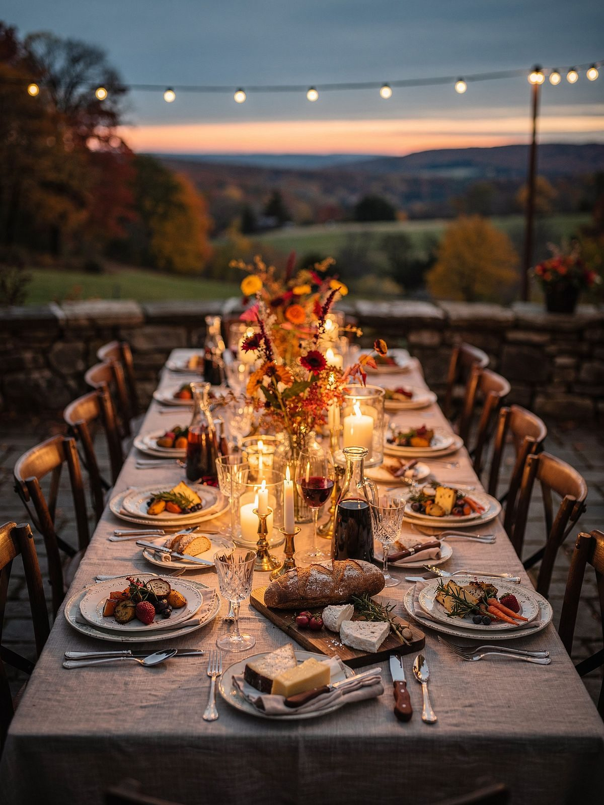
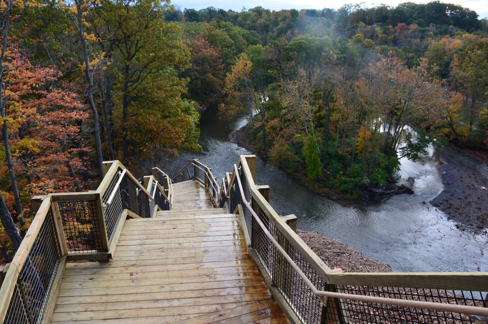
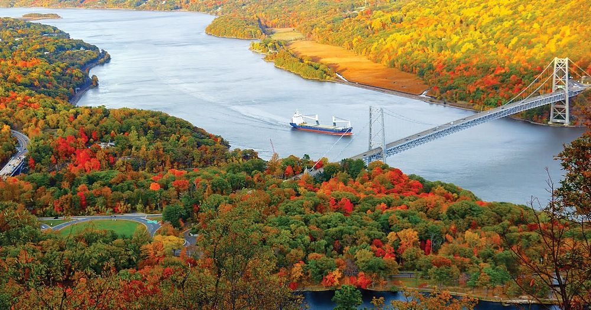
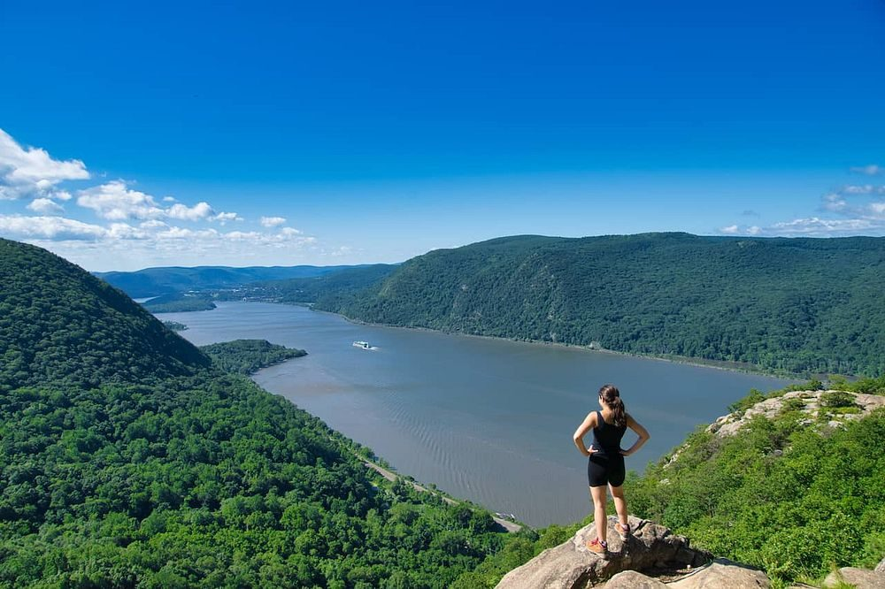
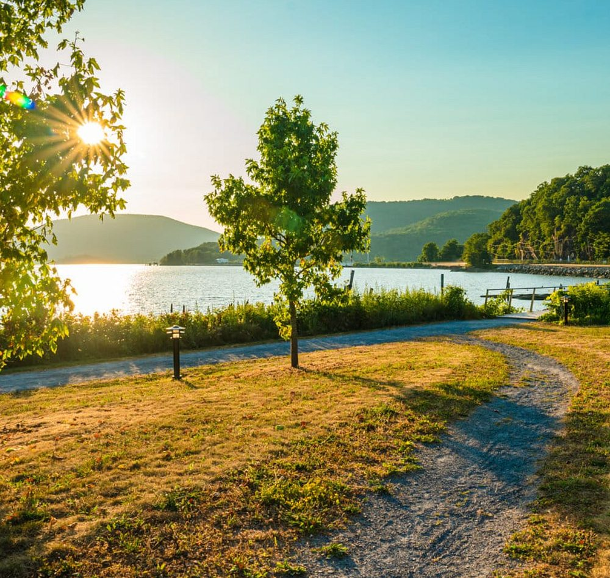

Agenda
Please plan to arrive at the Abbey Inn by 3pm on Wednesday, October 28. The official retreat agenda will end at 4:30pm on Friday, October 30.
October 28–30, 2026 · The Abbey Inn & Spa · Peekskill, New York
A private retreat to gather, reflect, connect, and look ahead: for our funders committed to ending factory farming and building a more compassionate food system.

Please plan to arrive at the Abbey Inn by 3pm on Wednesday, October 28. The official retreat agenda will end at 4:30pm on Friday, October 30.
Plan to arrive at The Abbey Inn & Spa (900 Fort Hill Rd, Peekskill, NY 10566) by 3:00 PM on Wednesday, October 28.
We'll share updates during the retreat through our WhatsApp community. It's also a great place to coordinate rides and connect with other attendees.
Everyone attending is listed in the Retreat Directory. Let Megan know if you'd like any updates to your entry. Please do not share the directory without written, express permission from Senterra staff.
Our retreat unfolds at The Abbey Inn & Spa, a beautifully restored historic landmark and former convent in Peekskill, New York. Once a contemplative monastery, it now offers a serene escape blending timeless architecture with modern comforts.
All meals will be shared on-site, with time built in for conversation, rest, and informal connection.
The Abbey's farm-to-table restaurant, rooted in the seasons and inspired by the Hudson Valley.
Group dining designed to foster connection beyond the formal agenda.

Arrive early, stay later, or use free time to explore the Hudson Valley.



